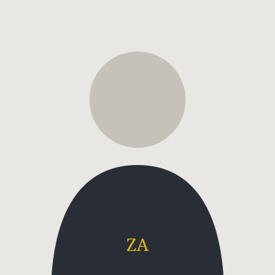

Computer & Hardware
Perawatan, instalasi sistem operasi, dan troubleshooting perangkat.
Menghubungkan website dan menyinkronkan data terbaru…
Hello, I'm Zaki Ansyari — someone who is interested in technology, computer networks, and web development.

01 — PROFIL
Saya adalah pelajar Teknik Jaringan Komputer dan Telekomunikasi yang senang mempelajari cara kerja teknologi, menyelesaikan masalah, dan membangun sesuatu yang bermanfaat. Saya percaya proses belajar yang konsisten adalah bagian penting dari pertumbuhan.
02 — KOMPETENSI
Perawatan, instalasi sistem operasi, dan troubleshooting perangkat.
Dasar jaringan, kabel UTP, dan konfigurasi konektivitas.
HTML, CSS, JavaScript, serta integrasi data sederhana.
03 — PILIHAN KARYA
Eksperimen, tugas, dan karya yang merekam proses belajar.
Website pribadi untuk merangkum profil, karya, dan perjalanan belajar.
Lihat detail ↗Dokumentasi praktik kabel jaringan dan troubleshooting perangkat.
Lihat detail ↗Catatan langkah kerja instalasi, perawatan, dan perbaikan perangkat.
Lihat detail ↗04 — PERJALANAN
Mengembangkan dasar komputer, jaringan, dan keterampilan teknologi melalui pembelajaran dan praktik.
Mengenal lingkungan kerja dan praktik dukungan teknis di bidang komputer dan administrasi digital.
Memperdalam pemrograman dan mengeksplorasi studi Teknik Informatika.
05 — DOKUMEN
Ringkasan profil, pendidikan, dan kemampuan.
06 — GALERI & MUSIK
Momen dan soundtrack yang menemani perjalanan.
NOW PLAYING IN MY WORLD
Musik menjadi teman untuk fokus, refleksi, dan menikmati proses.
07 — BUKU TAMU
Tulis sapaan singkat. Pesan akan ditampilkan setelah berhasil disimpan.
Jadilah yang pertama meninggalkan pesan.
08 — HUBUNGI SAYA
Punya ide, pertanyaan, atau ingin berkolaborasi? Saya terbuka untuk terhubung.